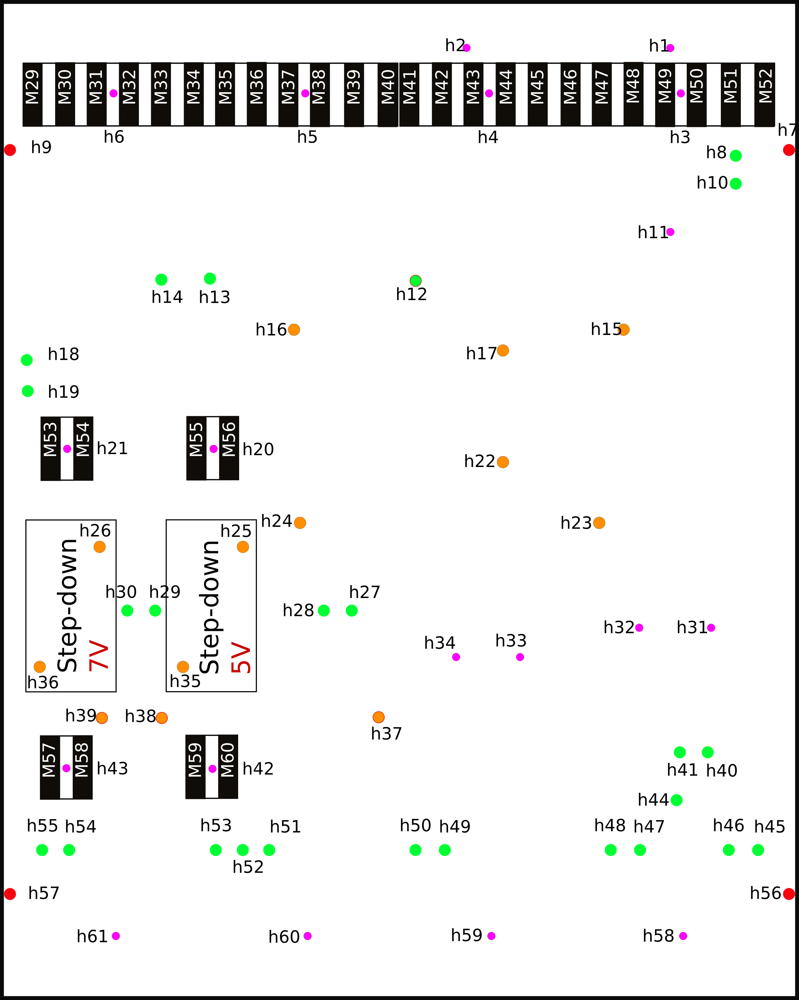
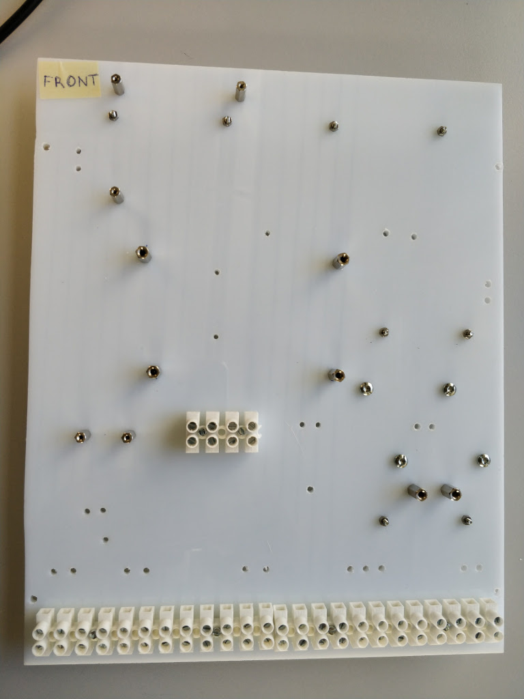
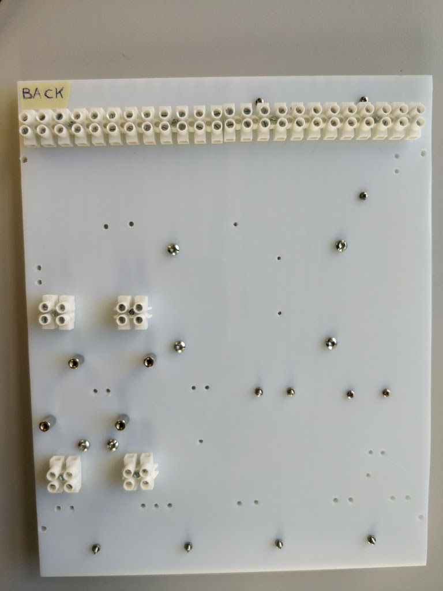
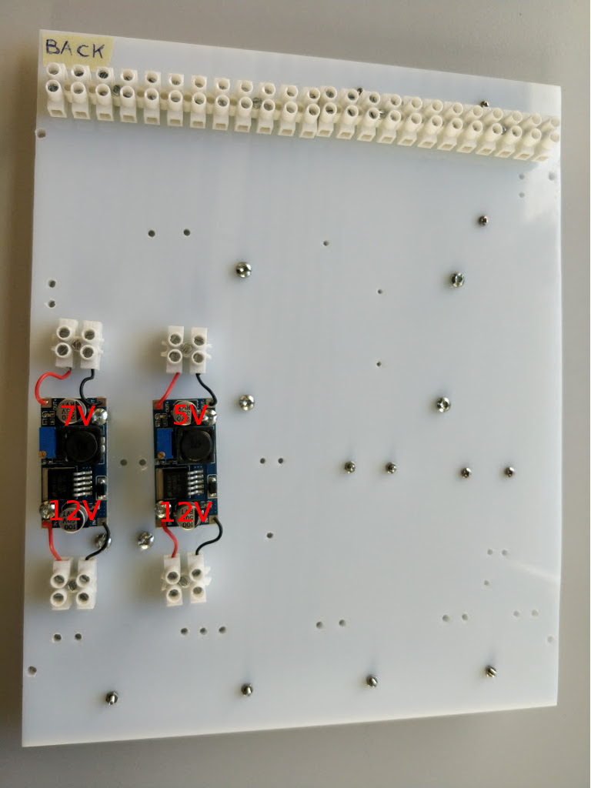
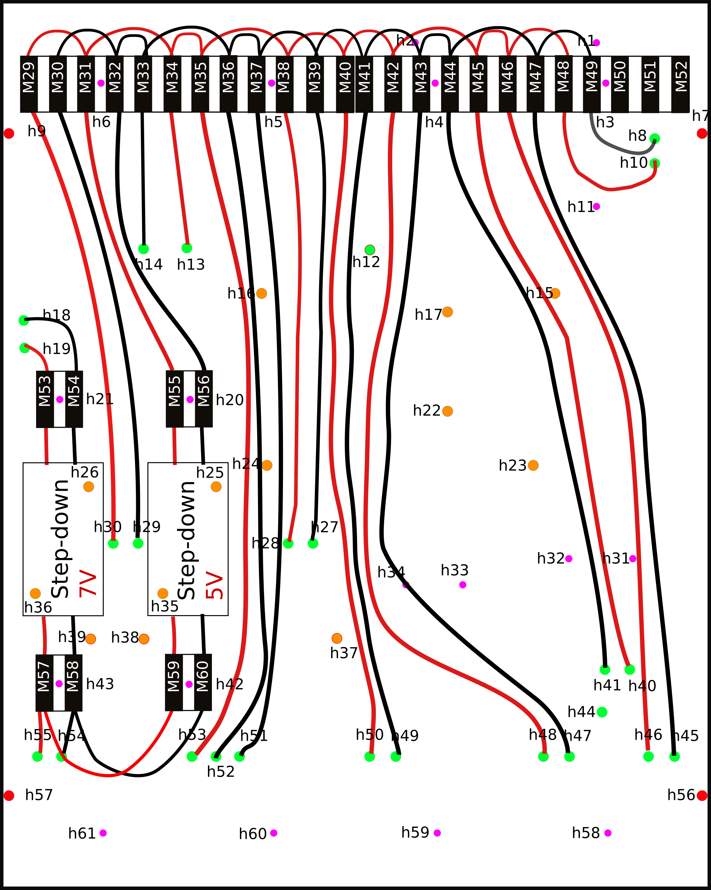
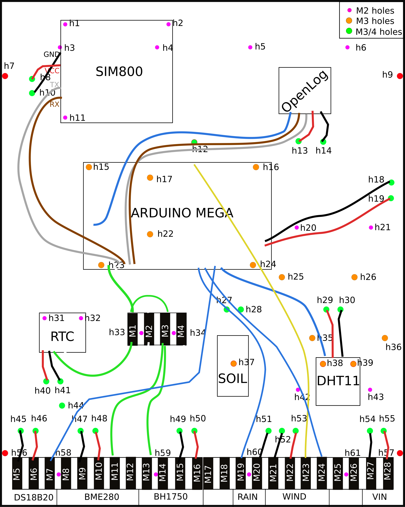

Setting up the control unit¶
START
Refer to the following hookup schemas to locate holes, components and connectors.
Front side Back side 
 Mount the connectors both on the front and back side.
Use the screws to fix the spacer on the board on the orange and violet holes. The spacers are used to mount the components. There are two types of screws and spacers: diameter M2 and M3.
Note
Do not mount the components during this step and leave empty the green holes.
Front side Back side   Mount the step-down converter on the back side of the board.
Note
The voltage of the step-down output current is written on the rear side. Mount them according to the images in the step 1 and to the following image (read the voltage written on the back-side of the step-down). The 7V output step-down must be on the left and it is use to power the Arduino.
Back side  Download this
worksheet fileand follow it from up to down, row by row, to mount the cables untill the section RESISTORS.Each cable is identified by an ID. The columns FROM, HOLE, TO describe the path that the cables have to follow. In the cells of these columns there are other IDs to represent different holes, input of the connectors or components PIN.
Note
- Keep the hookup schemas in step 1 as reference for the FROM, HOLE, TO numbers.
- Double check the correct schema connections.
Back side  Once the cables on the back and from the front to the back side are mounted, use the voltmeter to check the voltages. Remember to switch on the current using the power adapter.
Note
Before switching on the current please check that the output voltage of the power adapter is 12V.
At this step you can mount the components on the spacers according to the images of the step 1.
Go back to the excel file and restart from the RESISTORS section: go on plugging the cables. The result should look like in the image below.


END
Go to Sensor instruction

{kind=link}
{kind=link}
{kind=link}
{kind=link}
{kind=link}
{kind=link}